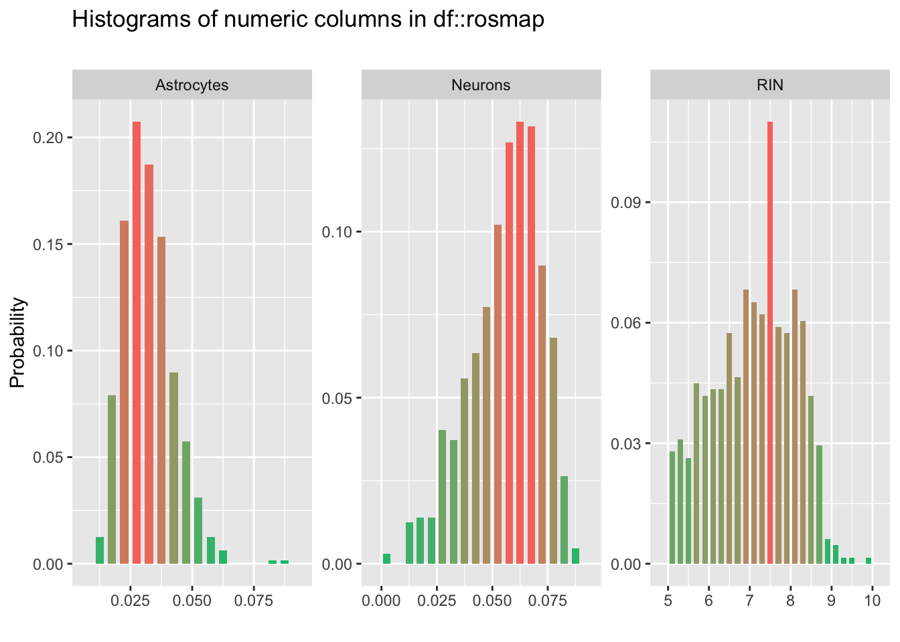
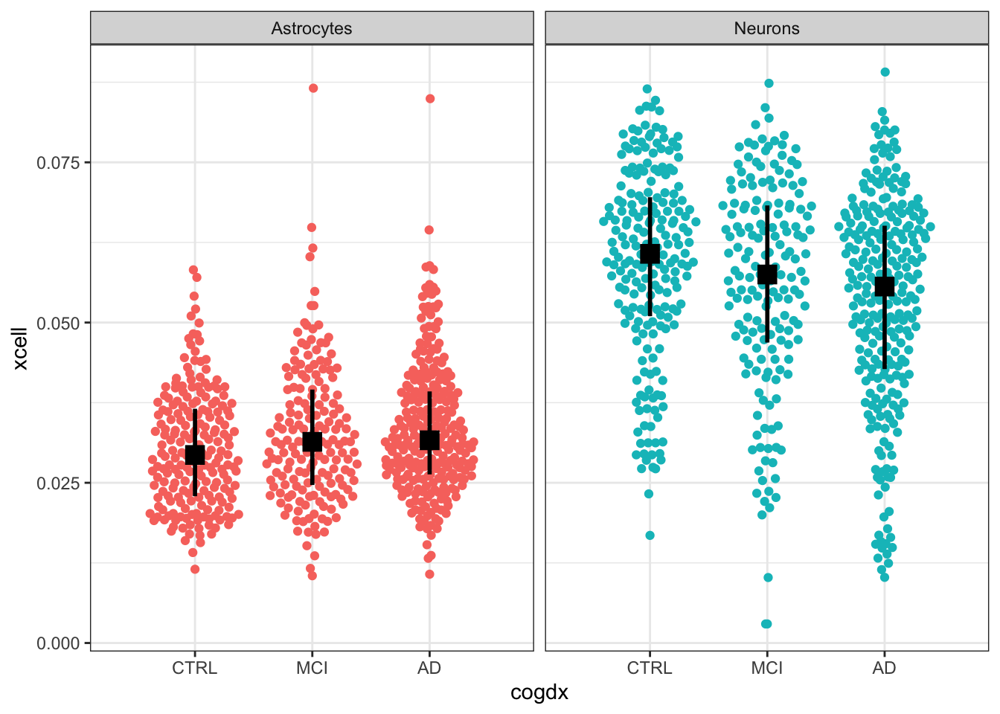
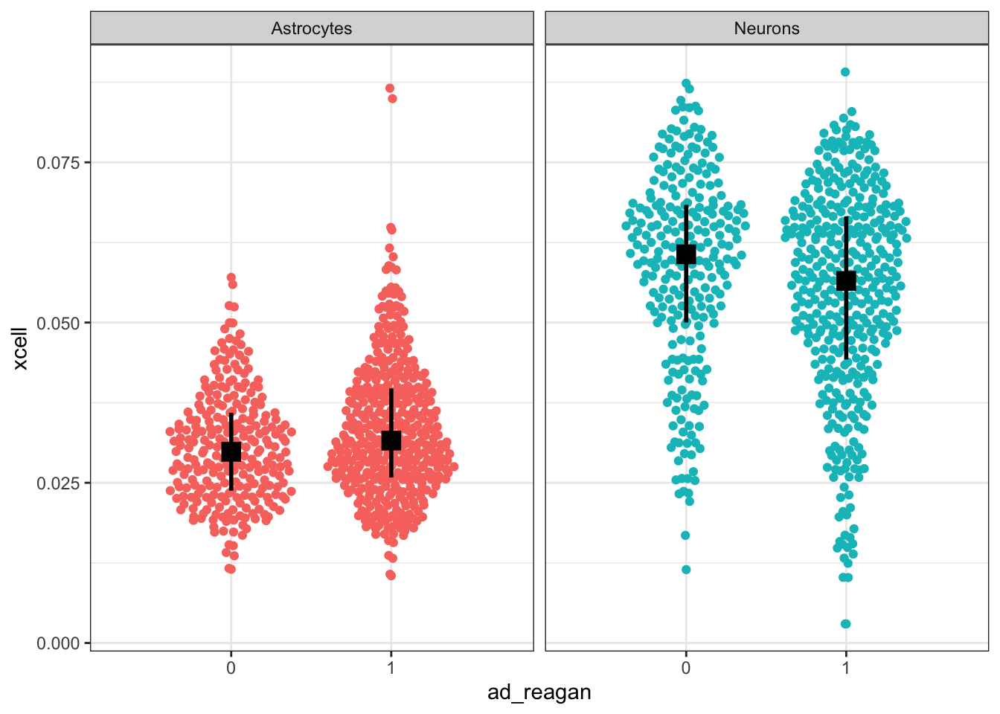
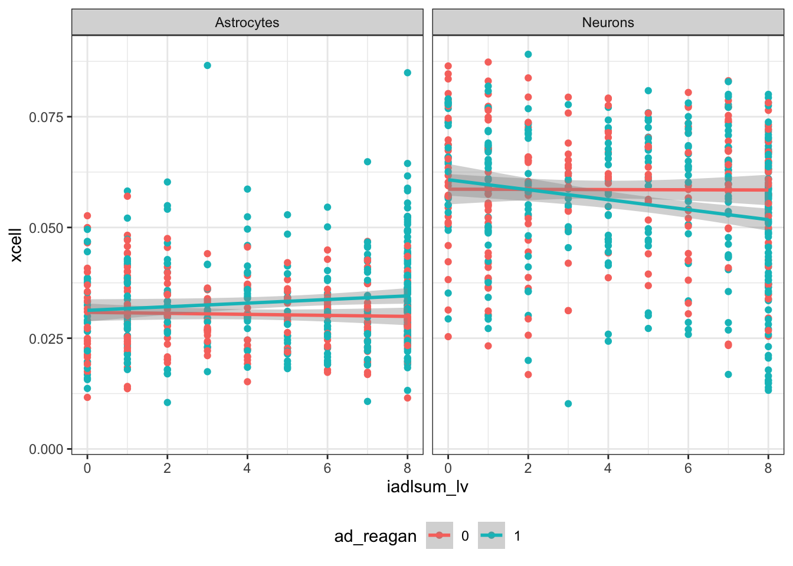
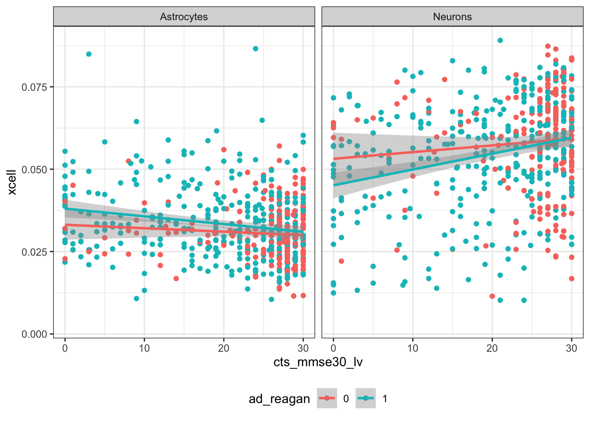
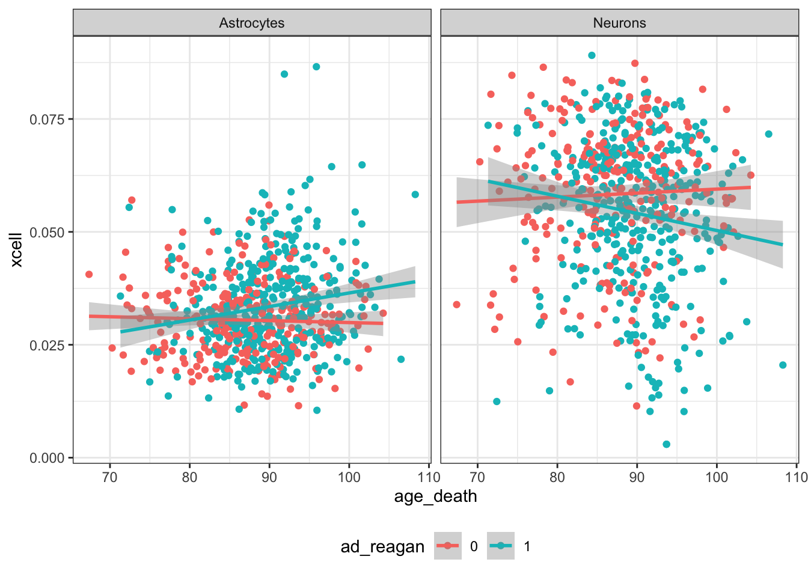
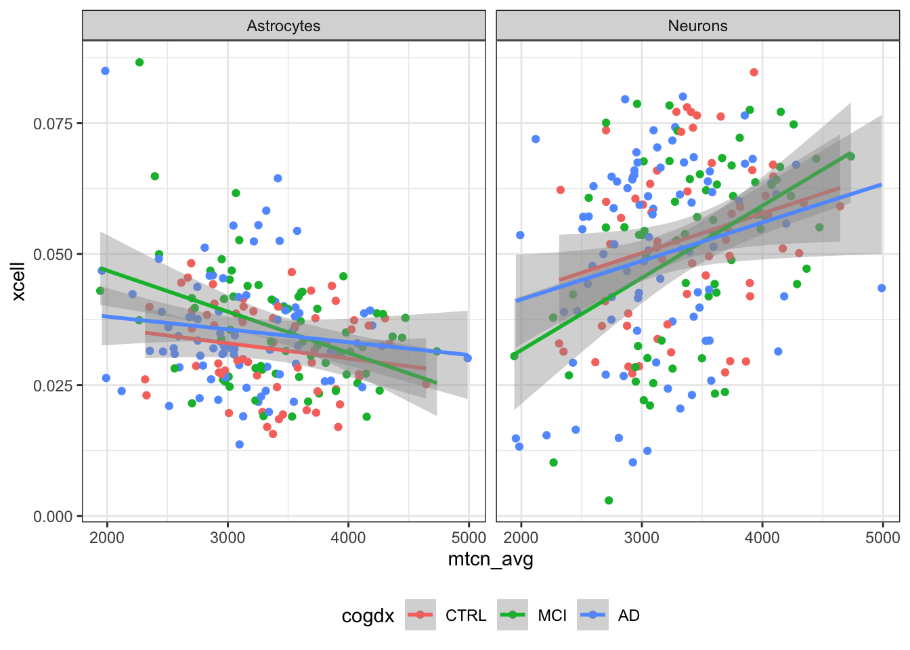
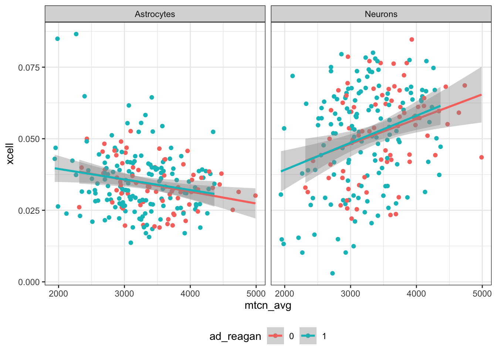

3.4 RNA-seq
- Neuronal and astrocyte cell type enrichment are estimated using xCell to adjust for potential neuronal cell loss in dementia
- Only avaliable in a subset of participants
| col_name | min | q1 | median | mean | q3 | max | sd | pcnt_na |
|---|---|---|---|---|---|---|---|---|
| Neurons | 0.00 | 0.05 | 0.06 | 0.06 | 0.07 | 0.09 | 0.02 | 82.41 |
| Astrocytes | 0.01 | 0.02 | 0.03 | 0.03 | 0.04 | 0.09 | 0.01 | 82.41 |
| RIN | 5.00 | 6.30 | 7.20 | 7.06 | 7.90 | 9.90 | 1.00 | 82.43 |
| Characteristic | rna_seq_tissue | Total | |
|---|---|---|---|
| DLPFC | Unknown | ||
| Source.Tissue.Type | |||
| Blood | 0 (0%) | 1 (<0.1%) | 1 (<0.1%) |
| Blood-Cerebellum | 0 (0%) | 1 (<0.1%) | 1 (<0.1%) |
| Blood-PBMC | 0 (0%) | 22 (0.6%) | 22 (0.6%) |
| Brain-Anterior Caudate | 2 (<0.1%) | 2 (<0.1%) | 4 (0.1%) |
| Brain-Cerebellum | 111 (3.0%) | 145 (3.9%) | 256 (7.0%) |
| Brain-DLPFC | 217 (5.9%) | 243 (6.6%) | 460 (13%) |
| Brain-Frontal Cortex (BA unknown) | 0 (0%) | 1 (<0.1%) | 1 (<0.1%) |
| Brain-Frontal Pole (BA10-12,32) | 0 (0%) | 1 (<0.1%) | 1 (<0.1%) |
| Brain-Occipital Association Cortex (BA18,19) | 2 (<0.1%) | 2 (<0.1%) | 4 (0.1%) |
| Brain-PCC | 0 (0%) | 1 (<0.1%) | 1 (<0.1%) |
| Brain-Posterior Cingulate Cortex | 62 (1.7%) | 5 (0.1%) | 67 (1.8%) |
| Brain-region unknown | 0 (0%) | 1 (<0.1%) | 1 (<0.1%) |
| lymphocytes _transformed _with EBV virus | 2 (<0.1%) | 3 (<0.1%) | 5 (0.1%) |
| Whole Blood | 188 (5.1%) | 167 (4.5%) | 355 (9.7%) |
| Unknown | 62 (1.7%) | 2,431 (66%) | 2,493 (68%) |
| Total | 646 (18%) | 3,026 (82%) | 3,672 (100%) |
3.4.1 Plots

rosmap_xcell <- select(rosmap, Neurons, Astrocytes, rna_seq_tissue, Source.Tissue.Type,
age_death, cogdx, ad_reagan, mtcn_avg, msex,
cts_mmse30_lv, iadlsum_lv, katzsum_lv
) %>%
mutate(ad_reagan = as_factor(ad_reagan),
cogdx = fct_recode(cogdx, "CTRL" = "1",
"MCI" = "2", "MCI" = "3",
"AD" = "4", "AD" = "5", NULL = "6")) %>%
filter(!is.na(Neurons)) %>%
pivot_longer(c(Neurons, Astrocytes), names_to = "cells", values_to = "xcell")
## Cogntive diagnosis by xCell Score
rosmap_xcell %>%
filter(!is.na(cogdx)) %>%
ggplot(., aes(x = cogdx, y = xcell, colour = cells)) +
facet_grid(. ~ cells) +
ggbeeswarm::geom_quasirandom(dodge.width=1) +
geom_pointrange(mapping = aes(x = cogdx, y = xcell, group = cells),
show.legend = F,
position = position_dodge(width = 1),
shape = 15, colour = 'black', size = 1,
stat = "summary",
fun.min = function(z) {quantile(z,0.25)},
fun.max = function(z) {quantile(z,0.75)},
fun = median) +
theme_bw() +
theme(legend.position = "none")
## Neuropath diagnosis by xCell Score
ggplot(rosmap_xcell, aes(x = ad_reagan, y = xcell, colour = cells)) +
facet_grid(. ~ cells) +
ggbeeswarm::geom_quasirandom(dodge.width=1) +
geom_pointrange(mapping = aes(x = ad_reagan, y = xcell, group = cells),
show.legend = F,
position = position_dodge(width = 1),
shape = 15, colour = 'black', size = 1,
stat = "summary",
fun.min = function(z) {quantile(z,0.25)},
fun.max = function(z) {quantile(z,0.75)},
fun = median) +
theme_bw() +
theme(legend.position = "none")
## IADL by xCell Score
ggplot(rosmap_xcell, aes(x = iadlsum_lv, y = xcell, colour = ad_reagan)) +
facet_grid(. ~ cells) +
geom_point() +
geom_smooth(method = lm) + theme_bw() +
theme(legend.position = "bottom")## `geom_smooth()` using formula 'y ~ x'## Warning: Removed 230 rows containing non-finite values (stat_smooth).## Warning: Removed 230 rows containing missing values (geom_point).
## MMSE by xCell Score
ggplot(rosmap_xcell, aes(x = cts_mmse30_lv, y = xcell, colour = ad_reagan)) +
facet_grid(. ~ cells) +
geom_point() +
geom_smooth(method = lm) + theme_bw() +
theme(legend.position = "bottom")## `geom_smooth()` using formula 'y ~ x'## Warning: Removed 148 rows containing non-finite values (stat_smooth).## Warning: Removed 148 rows containing missing values (geom_point).
## AOD by xCell Score
ggplot(rosmap_xcell, aes(x = age_death, y = xcell, colour = ad_reagan)) +
facet_grid(. ~ cells) +
geom_point() +
geom_smooth(method = lm) +
theme_bw() +
theme(legend.position = "bottom")## `geom_smooth()` using formula 'y ~ x'
## mtDNAcn vs xCell Score, by clinical DX
rosmap_xcell %>%
filter(Source.Tissue.Type == "Brain-DLPFC") %>%
filter(!is.na(cogdx)) %>%
ggplot(., aes(x = mtcn_avg, y = xcell, colour = cogdx)) +
facet_grid(. ~ cells) +
geom_point() +
geom_smooth(method = lm) +
theme_bw() +
theme(legend.position = "bottom")## `geom_smooth()` using formula 'y ~ x'
## mtDNAcn vs xCell Score, by neuropath DX
rosmap_xcell %>%
filter(Source.Tissue.Type == "Brain-DLPFC") %>%
ggplot(., aes(x = mtcn_avg, y = xcell, colour = ad_reagan)) +
facet_grid(. ~ cells) +
geom_point() +
geom_smooth(method = lm) +
theme_bw() +
theme(legend.position = "bottom")## `geom_smooth()` using formula 'y ~ x'